思索 / Mindmap
はじめかた
QUICK START GUIDE
人間の脳で、考えよう。
行き詰まったら AI と対話し、想像を膨らませる。

取扱説明書 — 第 1 版
思索 / Mindmap
人間の脳で、考えよう。
行き詰まったら AI と対話し、想像を膨らませる。
用意するものは、これだけです。
アプリのインストールも、道具の組み立ても要りません。

ログインしなくてもマップは作れます。ただしその場合、マップはこの端末だけに保存され、最終更新から30日で消えます。
ログインすると、クラウドに保存されてどの端末からでも開けるようになります。端末に残っているマップは、あとからまとめて取り込めます。
マップを書く画面は、大きく3つに分かれています。
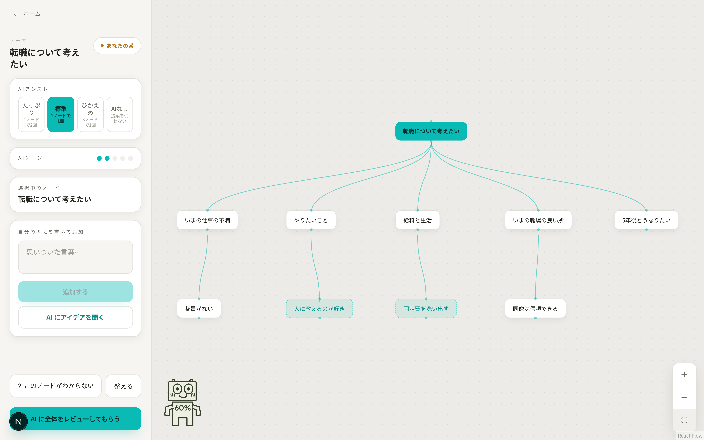
A B C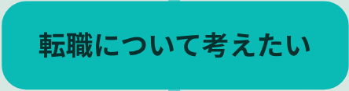
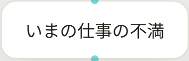
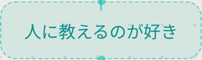
上から順に、こう並んでいます。
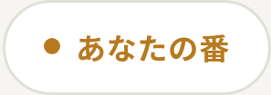
いまが「あなたの番」か「AIの番」か。基本はずっとあなたの番です。
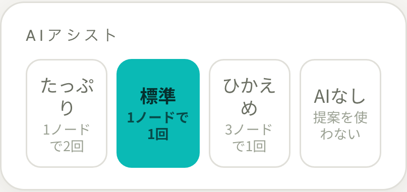
AI をどれくらい使うかを4段階から選びます。あとからいつでも変えられます。
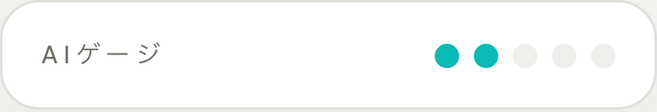
● 1つが、AI に相談できる1回分。自分でノードを足すと溜まります。
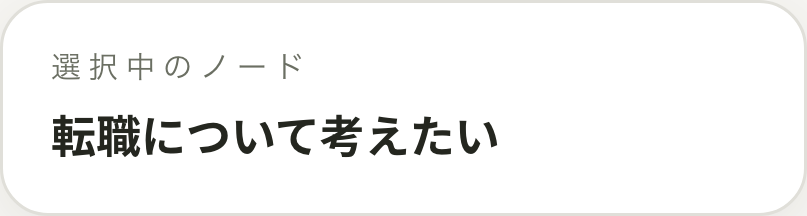
いま選んでいる言葉。新しい言葉は、ここにぶら下がります。
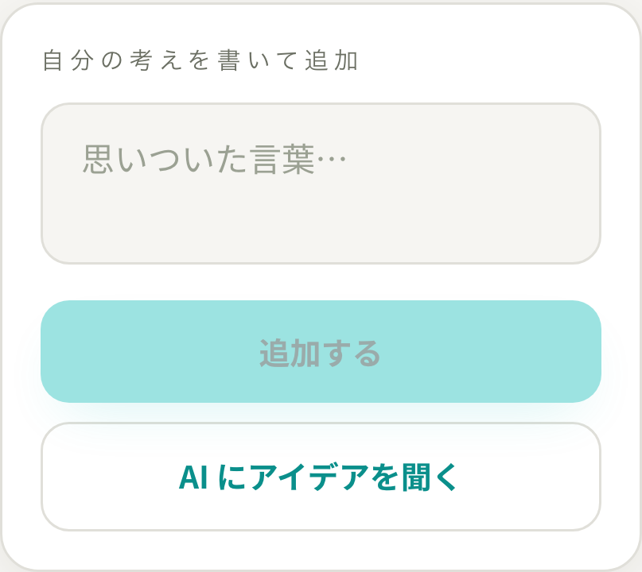
思いついた言葉を書いて「追加する」。すぐ下の「AI にアイデアを聞く」は、ゲージが溜まると押せるようになります。

ノードは短い言葉ほど扱いやすくなります。文章ではなく、単語やひとことで。
はじめの1枚は、この順でできあがります。
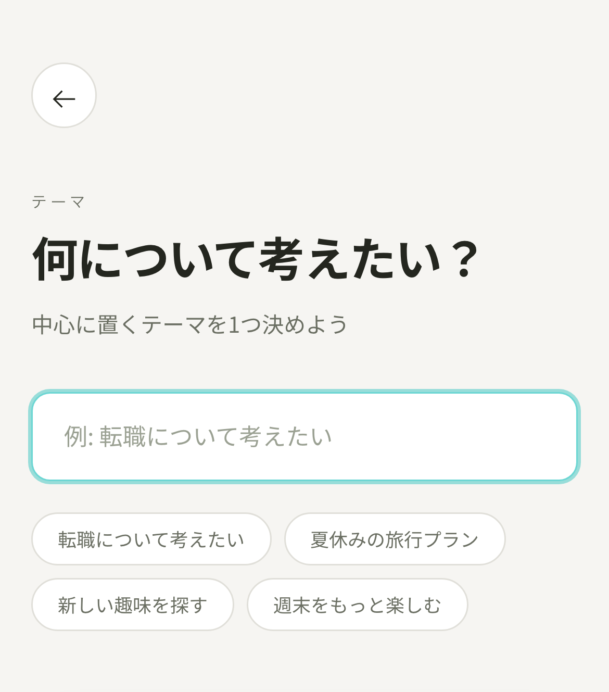
いま気になっていることを、ひとつだけ書きます。
うまい言葉にしなくて大丈夫。「転職について考えたい」くらいで十分です。
下に並ぶ例を押すと、そのまま入ります。
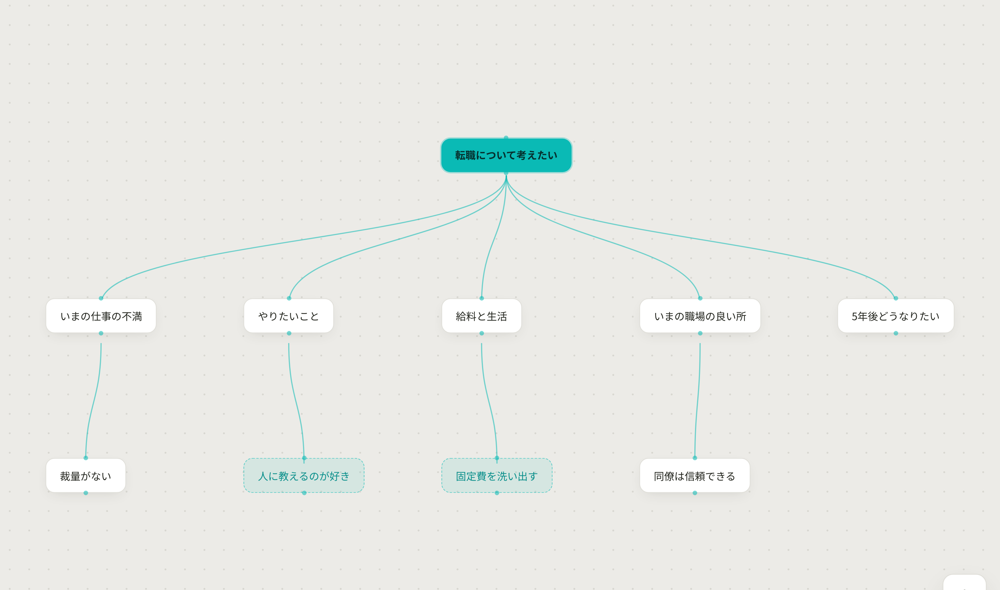
中心のことばを押して選び、思いついた言葉を書いて「追加する」。これを5回くり返します。
最初の5個は、AI に頼らず自分で出します。
あと 5 個 自分でノードを作ると、AI に相談できます
5個ぶら下げると、ゲージに ● が点きます。「AI にアイデアを聞く」が押せるようになります。
● 1つが、相談1回分です。使うと減り、自分でノードを足すとまた溜まります。
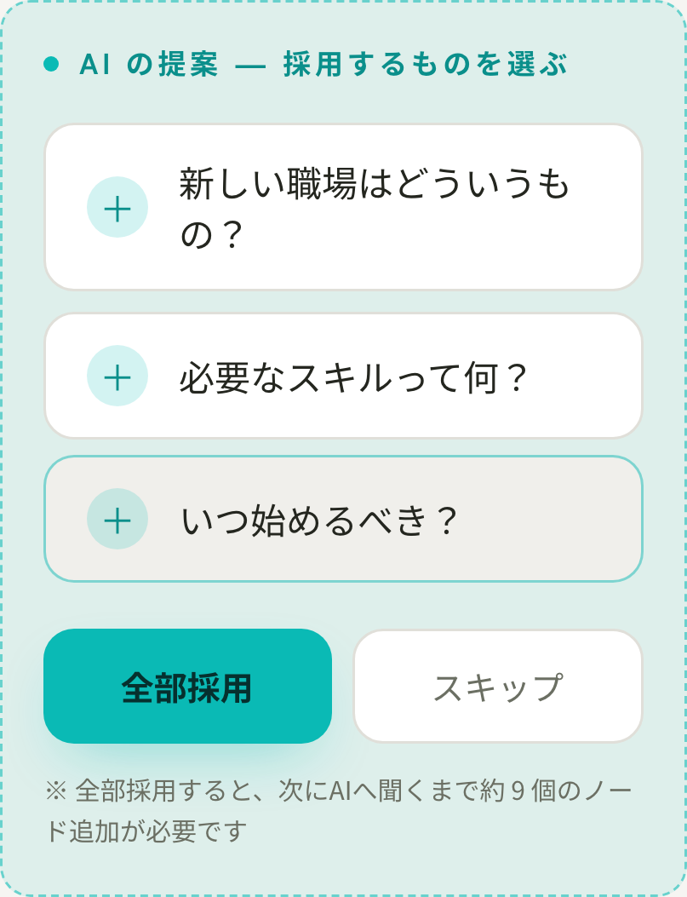
AI が2〜3個の案を出します。採用するかどうかを決めるのは、あなたです。
いる案だけ「＋」で採用。ぜんぶ違うと思ったら「スキップ」で構いません。
ノードを選んで 「? このノードがわからない」 を押すと、AI がやさしい言葉で説明します。
説明のむずかしさは、登録した誕生日から自動で調整されます。小学生には小学生の言葉で返ります。
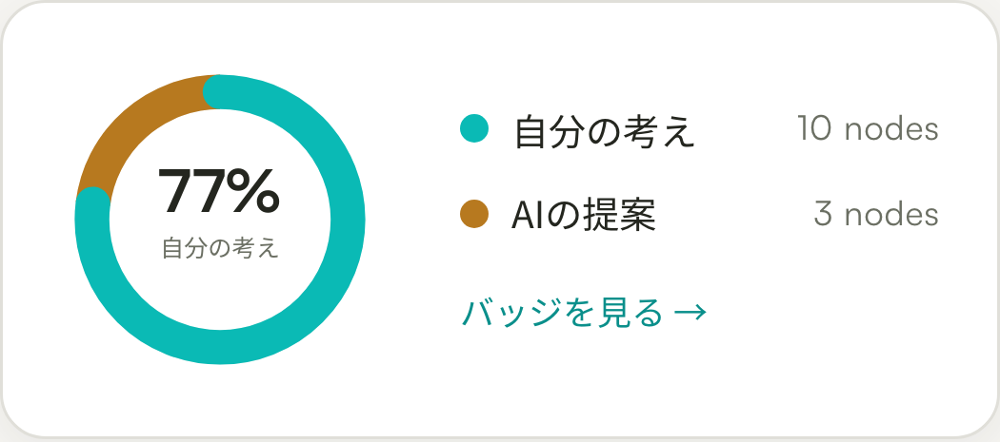
「AI に全体をレビューしてもらう」を押すと、マップ全体を読んで、次の一手を提案します。根拠にしたノードは光ります。
読んだら 「マップを一時的に保存する」。完成の印がつき、バッジがもらえます。
このアプリで AI が出し惜しみをするのは、あなたに先に考えてほしいからです。
| レベル | 溜まりかた | 向いている人 |
|---|---|---|
| たっぷり | ノード1個 = 相談2回分 | とにかく手数がほしい |
| 標準既定 | ノード1個 = 相談1回分 | 迷ったらこれ |
| ひかえめ | ノード3個 = 相談1回分 | 自分の頭で粘りたい |
| AI なし | 提案を使わない | 完全に自力で書きたい |
| はじめの5個 | 自分で5個ぶら下げるまで、AI はロックされています。到達すると相談1回分が渡されます。 |
| 全部採用 | まとめて採用すると、採用した数 × 3個ぶんのノードを足すまで次は聞けません。 |
| お助け | 30個以上に広げ、AI の割合が半分以下で、3分ほど手が止まったとき。ゲージと関係なく1回だけ相談できます。 |

このアプリは通知やポップアップで先を促しません。お助けは、条件がそろったときにパネルの中へ静かに出てくるだけです。
気づかなければ、そのまま自分のペースで書き続けてください。それがいちばん良い使い方です。
同じ機能でも、使い方で仕上がりが変わります。

それだけで、AI の提案は自分の考えに寄っていきます。
たいていは、次のどれかです。
| こうなった | こうする |
|---|---|
| 「AI にアイデアを聞く」が押せない | ゲージが足りていないか、通信が切れています。ノードを足すか、電波を確認してください。 |
| オフラインになった | 画面の上に帯が出ます。編集はそのまま続けられます。書いたものは端末に貯まり、つながった時点で自動的に同期されます。AI に聞く操作だけができません。 |
| マップが消えた | ログインしていない場合、マップは端末だけに保存され、最終更新から30日で削除されます。ログインするとクラウドに残ります。 |
| AI の提案が的外れ | 設定で AI の人格を変えられます。アドバイザー（肯定＋指摘）／上司（問いを返す）／アナリスト（論理と逆説）の3種類です。 |
| 説明の言葉がむずかしい | 説明のやさしさは誕生日から自動で決まります。設定の誕生日が正しいか確認してください。 |
| 画面がまぶしい・見づらい | ホーム画面の下、または設定で ライト／ダークを切り替えられます。既定は端末の設定に従います。 |
| ログインのたびに数字を聞かれる | 2要素認証が有効になっています。メールに届く6桁を入れてください。一度通せば30日は聞かれません。設定で解除もできます。 |
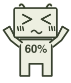
アプリ内の 「お問い合わせ」 から連絡してください。ホーム画面のいちばん下にあります。
送るときは、いつ・どの画面で・何をしたかの3つが書いてあると、こちらで再現できます。
この説明書で触れなかったものも含めた一覧です。
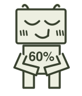